All NPCsAlle NPC's
All guh characters: game hosts, shopkeepers, story characters and the guh villagers with their jobs.
Alle guh-personages: spelleiders, winkeliers, verhaalfiguren en de guhdorpelingen met hun beroep.
| NameNaam | KindSoort | AboutOver | |
|---|---|---|---|
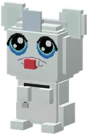 | Dokter Snotneus-guh | Guh characterGuh-personage | Dokter Snotneus-guh is a guh character in Guhs. Its in-game text (Dutch): Dokter Snotneus-guh heeft een witte...Dokter Snotneus-guh heeft een witte jas, een stethoscoop, een spiegeltje op zijn hoofd en een rode neus die... |
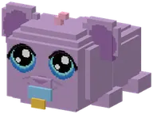 | Babyguhtje | Guh characterGuh-personage | Babyguhtje is een guh-personage uit Guhs. |
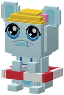 | Badmeester Bubbel | Guh characterGuh-personage | Badmeester Bubbel is a guh character in Guhs. Its in-game text (Dutch): De badmeester van het Knuffelbad.De badmeester van het Knuffelbad. Hij let op de drie glijbanen, leert je hoe je een guh wast tot hij glanst,... |
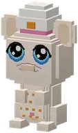 | Bakker Korstje | Guh characterGuh-personage | Bakker Korstje is a guh character in Guhs. Its in-game text (Dutch): Bakker Korstje bakt al zijn hele leven...Bakker Korstje bakt al zijn hele leven kaasknabbelbrood, en hij is er zelf een beetje op gaan lijken:... |
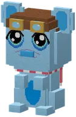 | Kapitein Wolkje | Guh characterGuh-personage | Kapitein Wolkje is a guh character in Guhs. Its in-game text (Dutch): Vliegt met zijn guh-luchtballon over de...Vliegt met zijn guh-luchtballon over de Guhmensie en vertelt over alles wat je ziet. Hoog, hoger, VAHOEG! |
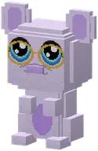 | Bibliothecaris | Guh characterGuh-personage | Bibliothecaris is a guh character in Guhs. Its in-game text (Dutch): De Bibliothecaris van de guhbibliotheek...De Bibliothecaris van de guhbibliotheek kent alle guhverhalen. Lees ze allemaal op de lessenaars! |
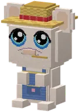 | Boerin Hooibaal | Guh characterGuh-personage | Boerin Hooibaal is a guh character in Guhs. Its in-game text (Dutch): Boerin Hooibaal zorgt voor alle...Boerin Hooibaal zorgt voor alle boerderijdieren, met een strootje in haar mond. |
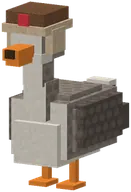 | Boris | Guh characterGuh-personage | A real goose (not a guh!) with a fur hat and a Russian accent. Da, kleine guh... gak!Een echte gans (geen guh!) met een bontmutsje en een Russisch accent. Da, kleine guh... gak! |
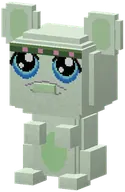 | Boswachterguh | Guh characterGuh-personage | High in the Moederboom. Tells you about guh families, then a tip about the forest.Zorgt voor het Vadswoud en alle guhfamilies. Verkoopt vadshout, zaailingen, guhnestjes en het... |
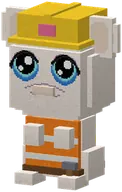 | Bob de Guhbouwer | Guh characterGuh-personage | Bob de Guhbouwer is a guh character in Guhs. Its in-game text (Dutch): Bob de Guhbouwer bouwt het mooiste...Bob de Guhbouwer bouwt het mooiste huisje van het dorp, met een potlood achter zijn oor en een hamer aan zijn... |
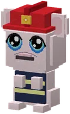 | Brandweercommandant Blusguh | Guh characterGuh-personage | Brandweercommandant Blusguh is a guh character in Guhs. Its in-game text (Dutch): Brandweercommandant Blusguh...Brandweercommandant Blusguh heeft de rode helm met de gouden ster en de mooiste roetsnor van het hele dal. |
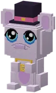 | Burgemeester Vadsema | Guh characterGuh-personage | Burgemeester Vadsema is a guh character in Guhs. Its in-game text (Dutch): Burgemeester Vadsema, met hoge...Burgemeester Vadsema, met hoge hoed en gouden ambtsketen. Organiseert het Grote Knusfeest en daarna elk... |
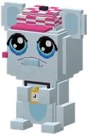 | Coach Vahoegvroem | Guh characterGuh-personage | Coach Vahoegvroem is a guh character in Guhs. Its in-game text (Dutch): Coach Vahoegvroem kent elke bocht van...Coach Vahoegvroem kent elke bocht van haar drie banen uit haar hoofd. |
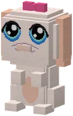 | Cocotje | Guh characterGuh-personage | In a little house with a guh face in one of the town's streets lives Cocotje, with a bow on her head.Cocotje is altijd iets kwijt. Ze hangen aan haar veh. Njeg. |
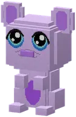 | DJ-guh | Guh characterGuh-personage | DJ-guh is a guh character in Guhs. Its in-game text (Dutch): De DJ-guh speelt de kleuren voor: dans ze in de...De DJ-guh speelt de kleuren voor: dans ze in de goede volgorde na. Eén verkeerde stap en de muziek stopt. |
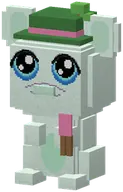 | Meneer Vadskronkel | Guh characterGuh-personage | Meneer Vadskronkel is a guh character in Guhs. Its in-game text (Dutch): Meneer Vadskronkel knipt al zijn...Meneer Vadskronkel knipt al zijn hele leven heggen, en zijn snor krult net zo mooi als zijn doolhof. |
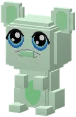 | Golfguh | Guh characterGuh-personage | Golfguh is a guh character in Guhs. Its in-game text (Dutch): De Golfguh leent je een club voor 9 holes...De Golfguh leent je een club voor 9 holes guhminigolf. Elke hole heeft drie afslagmatjes: groen voor... |
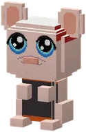 | Grillguh | Guh characterGuh-personage | Grillguh is a guh character in Guhs. Its in-game text (Dutch): Een guh-kok met een torenhoge koksmuts en een...Een guh-kok met een torenhoge koksmuts en een schort. De Mika's hebben zijn Aanmaakblokjes gejat! |
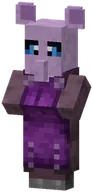 | Guhkleermaker | Guh villagerGuhdorpeling | Guhkleermaker is een guh-personage uit Guhs. |
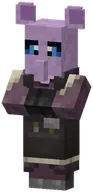 | Hamsterbouwer | Guh villagerGuhdorpeling | Hamsterbouwer is een guh-personage uit Guhs. |
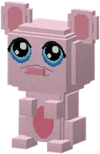 | Hongerige Guh | Guh characterGuh-personage | Sits up on its hind legs at guh picnics. Right-click it and it tells you in chat that it wants 10 gefrituurde...Zit rechtop op zijn achterpootjes bij guhpicknicks. Rechtsklik erop en hij vertelt in de chat dat hij 10... |
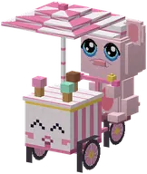 | IJscoguh Tingeling | Guh characterGuh-personage | Tingeling! Tingeling! Now and then IJscoguh Tingeling cycles through the Guhmension with his ice cream cart...IJscoguh Tingeling fietst met zijn ijscokar door de Guhmensie. Tingeling! |
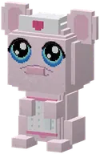 | Juf Knuffel | Guh characterGuh-personage | Juf Knuffel is a guh character in Guhs. Its in-game text (Dutch): Past op alle babyguhtjes van het...Past op alle babyguhtjes van het Knuffeldal. Ze kent vier slaapliedjes en heeft altijd een flesje kaasmelk in... |
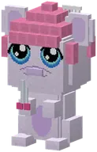 | Kapper Krulletje | Guh characterGuh-personage | Kapper Krulletje is a guh character in Guhs. Its in-game text (Dutch): Kapper Krulletje knipt, krult en föhnt...Kapper Krulletje knipt, krult en föhnt elke guh vahoeg mooi. Zijn eigen krullen zet hij elke ochtend met een... |
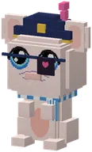 | Kapitein Floepguh | Guh characterGuh-personage | Kapitein Floepguh is a guh character in Guhs. Its in-game text (Dutch): Kapitein Floepguh bewaakt de...Kapitein Floepguh bewaakt de Knabbelkatapult. Aan de overkant van de kloof hebben de Mika's hun forten... |
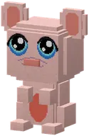 | Kermis-guh | Guh characterGuh-personage | Right-click the Kermis-guh in her stall to trade. For kermisbonnen she sells the kermis outfit for your guh:...Rechtsklik op de Kermis-guh in haar kraampje om te ruilen. Voor kermisbonnen verkoopt ze het kermispakje voor... |
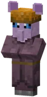 | Knabbelboer | Guh villagerGuhdorpeling | Knabbelboer is een guh-personage uit Guhs. |
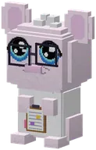 | Professor Knabbelkloon | Guh characterGuh-personage | The professor (crooked round glasses he keeps pushing straight, a messy white tuft, a lab coat with a pink...Professor Knabbelkloon is de slimste en meest verstrooide guh van de Guhzee. |
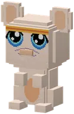 | Knabbelplukker | Guh characterGuh-personage | Picks knabbelbessen all day (and secretly eats a few). Guhdex: "Pas op: soms eet ze de oogst zelf op." She...Plukt de hele dag knabbelbessen en ruilt ze tegen van alles. Pas op: soms eet ze de oogst zelf op. |
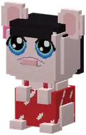 | Lilo-guh | Guh characterGuh-personage | Black hair, a red dress with white leaves and a hibiscus behind her ear. Loves Elvis-guh music.Een klein, eigenwijs guhmeisje met lang zwart haar, een rode jurk met witte blaadjes en een roze hibiscus... |
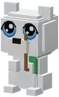 | Luk | Guh characterGuh-personage | Green scarf and a fishing rod. Luk never says a word, but nods and hugs all the more.Een grote, lieve ijsbeer-guh met een groene sjaal en een hengeltje. |
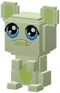 | Maagenzym-guh | Guh characterGuh-personage | Next to your portals sits your Stomach Enzyme Guh. Right-click it for your stomach's settings: public (the...Naast je portalen zit je Maagenzym-guh. Rechtsklik erop voor de instellingen van je maag: openbaar... |
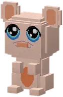 | Mepguh | Guh characterGuh-personage | Mepguh is a guh character in Guhs. Its in-game text (Dutch): De Mepguh geeft je een mepper: mep de Mika's op...De Mepguh geeft je een mepper: mep de Mika's op het 4x4-bord, maar nooit de guh! |
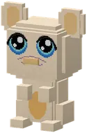 | Mijnguh | Guh characterGuh-personage | Mijnguh is a guh character in Guhs. Its in-game text (Dutch): De Mijnguh leent je een houweel voor de...De Mijnguh leent je een houweel voor de kaasaders, die je nergens anders vindt. |
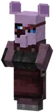 | Mika-jager | Guh villagerGuhdorpeling | Mika-jager is een guh-personage uit Guhs. |
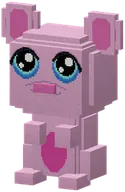 | Moeder Vadsig | Guh characterGuh-personage | Moeder Vadsig is een guh-personage uit Guhs. |
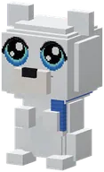 | Muk | Guh characterGuh-personage | A big sweet polar-bear guh with a blue scarf. Muk talks for two.Een grote, lieve ijsbeer-guh met een blauwe sjaal. Muk praat voor twee (want Luk zegt nooit iets) en vist... |
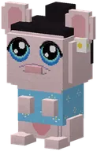 | Nani-guh | Guh characterGuh-personage | Lilo-guh's big sister: a bit strict, but very lief.Lilo-guhs grote zus. Ze zorgt voor iedereen: voor Lilo-guh, voor het huisje op palen en nu ook voor 626-guh... |
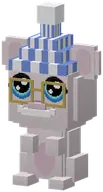 | Opa Guh | Guh characterGuh-personage | Opa Guh is a guh character in Guhs. Its in-game text (Dutch): Zit het liefst bij het kampvuur en vertelt elke...Zit het liefst bij het kampvuur en vertelt elke nacht een verhaal van vroeger: over Mika's, kaasknabbels en... |
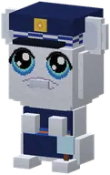 | Inspecteur Vahoegsma | Guh characterGuh-personage | Inspecteur Vahoegsma is a guh character in Guhs. Its in-game text (Dutch): Inspecteur Vahoegsma lost elke...Inspecteur Vahoegsma lost elke zaak op met zijn grote vergrootglas en een zakje kaasknabbels (om na te... |
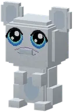 | Poortwachter | Guh characterGuh-personage | Two gate guards stand in front of the drawbridge. They only let friends of the guhs in: walk into the gate...De poortwachters van het guhkasteel. Ze laten alleen guhvrienden binnen... |
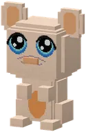 | Raceguh | Guh characterGuh-personage | Raceguh is a guh character in Guhs. Its in-game text (Dutch): De Raceguh leent je een raceguh: drie rondjes...De Raceguh leent je een raceguh: drie rondjes door de ringen, over VAHOEG-platen en tegen je eigen spookguh. |
 | Reisguh | Guh characterGuh-personage | Besides the one at every guh portal and at the guh castle, a Reisguh now lives in the big places: Guhwarden...De Reisguh: een guh-conducteur. Rechtsklik om hem te ontdekken; daarna reis je tussen alle Reisguhs die je... |
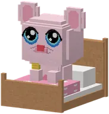 | Rosy | Guh characterGuh-personage | A little pink baby guh in her bed, with a yellow scarf and a red sniffly nose. She needs the medicine.Een klein roze babyguhtje in een bedje, met een geel sjaaltje en een rood neusje. |
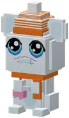 | Schaatsmeester Guhglij | Guh characterGuh-personage | Schaatsmeester Guhglij is a guh character in Guhs. Its in-game text (Dutch): Schaatsmeester Guhglij heeft een...Schaatsmeester Guhglij heeft een oranje pompommuts, een fluitje aan een koord en twee schaatsjes om zijn nek. |
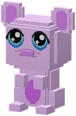 | Showguh | Guh characterGuh-personage | Showguh is a guh character in Guhs. Its in-game text (Dutch): De Showguh presenteert de Vads-wedstrijd: kleed...De Showguh presenteert de Vads-wedstrijd: kleed een modelguh aan voor het thema en laat de jury oordelen. |
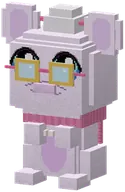 | Opoe Njegschuif | Guh characterGuh-personage | Opoe Njegschuif is a guh character in Guhs. Its in-game text (Dutch): Opoe Njegschuif sjoelt al sinds ze een...Opoe Njegschuif sjoelt al sinds ze een klein guhtje was. Ze breit haar eigen vestjes, schenkt thee voor... |
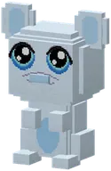 | Slee-guh | Guh characterGuh-personage | Slee-guh is een guh-personage uit Guhs. |
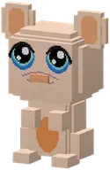 | Smulguh | Guh characterGuh-personage | Smulguh is a guh character in Guhs. Its in-game text (Dutch): De Smulguh leent je haar grote schaal: vang een...De Smulguh leent je haar grote schaal: vang een minuut lang het vallende eten, en blijf weg van Mika-vet. |
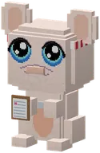 | Juf Vahoegsakee | Guh characterGuh-personage | Juf Vahoegsakee is a guh character in Guhs. Its in-game text (Dutch): Juf Vahoegsakee fluit de Grote Zeskamp.Juf Vahoegsakee fluit de Grote Zeskamp. Ze heeft altijd haar klembord bij zich en weet precies wie er het... |
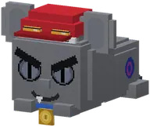 | Steele-Mika | Guh characterGuh-personage | The show-off champion sled leader: red racing cap, goggles, a gold medal. IK ben de snelste, njeh-heh!De opschepperige kampioen-sledeleider van Nomguh, met een rood racepetje, een stofbril en een gouden... |
| Stempelguh | Guh characterGuh-personage | Stempelguh is a guh character in Guhs. Its in-game text (Dutch): In elk dorpje langs de Elf-Guhjestocht staat...In elk dorpje langs de Elf-Guhjestocht staat een Stempelguh met een stempel in zijn pootje. | |
| Professor Sterretje | Guh characterGuh-personage | Professor Sterretje is a guh character in Guhs. Its in-game text (Dutch): Kijkt elke nacht door zijn...Kijkt elke nacht door zijn reuzentelescoop naar de guh-sterrenbeelden. De Grote Knabbel is zijn lievelings. | |
| Tamboerguh | Guh characterGuh-personage | Tamboerguh is een guh-personage uit Guhs. | |
| Tandarts-guh | Guh characterGuh-personage | In the mouth sits the Dentist Guh. Do its jobs and your stomach stretches:In de mond zit de Tandarts-guh. Doe zijn klusjes en je maag rekt uit: | |
| Mevrouw Theelepel | Guh characterGuh-personage | A teapot with a guh-face lid. Mevrouw Theelepel stirs with her giant teaspoon and knows every tea.Schenkt thee voor iedereen die even vads wil zitten. Ze roert altijd met haar grote theelepel en kent elke... | |
| Tikiguh | Guh characterGuh-personage | Nobody knows what he looks like without his mask. Een tiki moet je voelen, niet zien.Niemand weet hoe Tikiguh er zonder zijn masker uitziet. Hij houdt het altijd voor zijn snoetje, aan een... | |
| Timmerguh | Guh characterGuh-personage | Helmpje with a pink ridge, a pencil behind his ear, a tuinbroek and a tool belt.De Timmerguh bouwt aan de rand van elk Knuffeldal-stadje een guhhuisje: een huisje in de vorm van een... | |
| Tipguh | Guh characterGuh-personage | Tipguh is een guh-personage uit Guhs. | |
| Vadssmid | Guh villagerGuhdorpeling | Vadssmid is een guh-personage uit Guhs. | |
| Vadstemmer | Guh villagerGuhdorpeling | Vadstemmer is een guh-personage uit Guhs. | |
| Verstopguhtje | Guh characterGuh-personage | Verstopguhtje is een guh-personage uit Guhs. | |
| Visguh | Guh characterGuh-personage | Visguh is a guh character in Guhs. Its in-game text (Dutch): De Visguh leent je een hengel voor de...De Visguh leent je een hengel voor de viswedstrijd. De bijzondere guhvissen mag je houden! | |
| De witte wolf-guh | Guh characterGuh-personage | Glows softly like a star in the snow. She only appears at the darkest moment.Een witte wolf-guh die zachtjes gloeit, als een sterretje in de sneeuw. | |
| De wolkenhoeder | Guh characterGuh-personage | He knows exactly what the heart needs.Een zachte wolkenguh met een gouden herdersstaf en een piepklein aureooltje. | |
| Zeemeerguh | Guh characterGuh-personage | The Zeemeerguh in the dome finally looks the part: no more paws, but a scaly mermaid tail curled in front of...De Zeemeerguh: een guh met een vissenstaart! Zwemt supersnel. Tem hem, zadel hem en rijd onder water. |